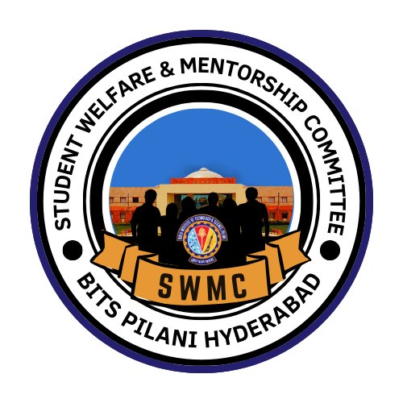
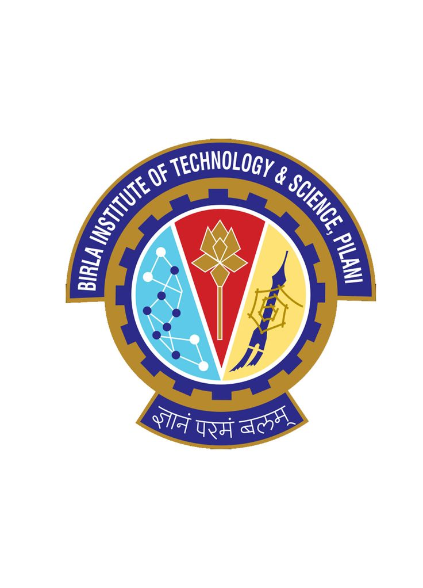
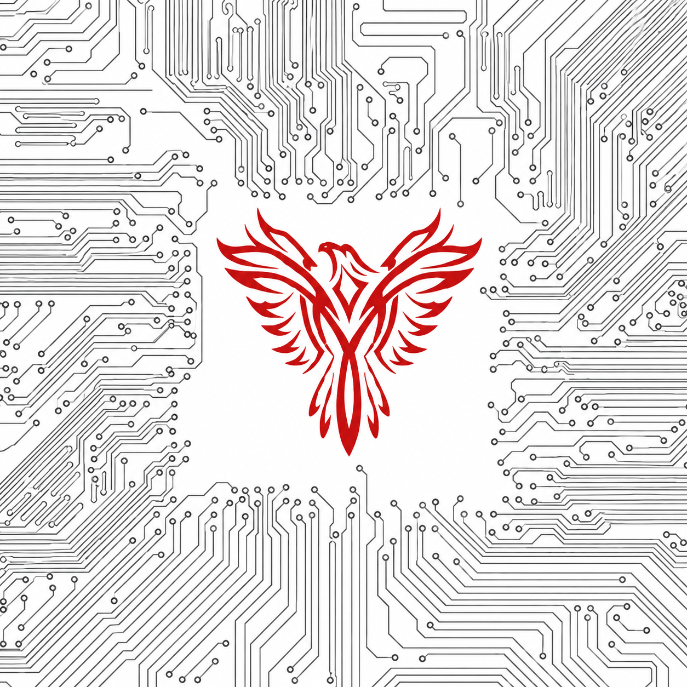
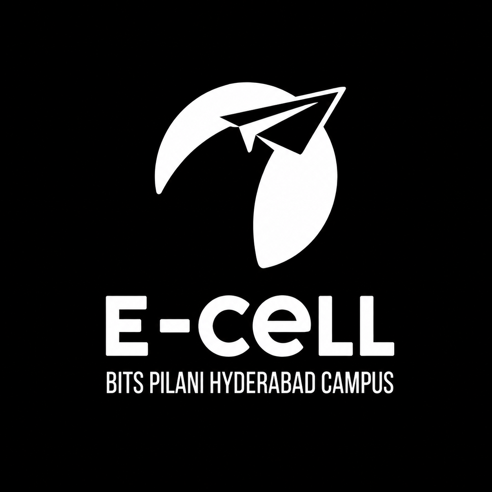
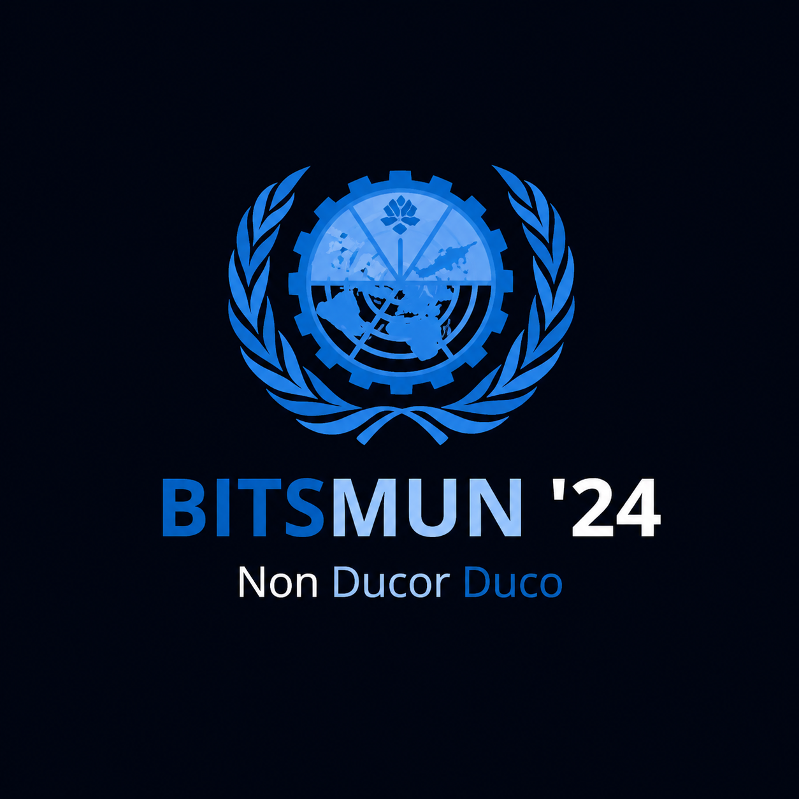

Beyond the Work
I'm really glad you made it here — this is the page where you get to know who I am beyond the lab and the studies. The work tells you what I build; this page tells you why I build it.
Select a section above — only that section will appear below.
Positions of Responsibility

Training & Counselling Lead
Student Welfare & Mentorship Committee (SWMC) · BPHC
Founding member and integral part of the leadership team of SWMC — a committee bridging the gaps between students and the administration.
- Led a team of 150 student-mentors and pursued collaborations with multiple technical and administrative organisations to provide relevant resources to the student body.
- Designed and executed a robust mentorship programme addressing multiple issues faced by students from Day 0, greatly impacting more than 500 students in their first year.
- Solely acted as the face of new technical teams to administrative bodies, helping them set up and develop with resources and ample funding.

Student–Faculty Council Member
Dept. of Electrical & Electronics Engineering (EEE) · BPHC
One of 15 members of the Student–Faculty Council, an administrative body aiming to improve academic quality for courses under the Dept. of EEE.
- Served as representative for Digital Design, Microwave Engineering, Communication Networks, Information Theory & Coding, and Embedded Systems Design.
- Worked to include lab components in certain courses to ensure industry-level software exposure for students.

Senior Advisor
PHoEnix Association · BPHC
- Worked to improve the structure of the Association and diversify projects into more real-life and research-heavy problems.
- Served as an integral part of the Editorial Team; helped set up THE PULSE — a publication detailing activities, successes, and tips for navigating campus life.
- Received a Certificate of Appreciation for contributions to the Dept. of EEE.

IIC Coordinator
Entrepreneurship Cell (E-Cell) · BPHC
- Acted as a direct link between faculty, administration, and the E-Cell to ensure smooth flow of all events and speaker sessions.
- Oversaw event finances, summarised activities, and submitted reports to the administration ensuring timely completion and financial accountability.
- As Senior Associate, headed and guided the Research Team in producing case studies and analysing market and startup trends.

USG — Venue & Operations
BITSMUN '24 · BPHC
- Part of the leadership team; led a 3-day conference with 600+ delegates, overseeing end-to-end logistics, scheduling, and on-ground execution with zero operational disruptions.
- Coordinated cross-functional teams and vendors to manage crowd flow, infrastructure readiness, and real-time issue resolution within timelines and operational constraints.